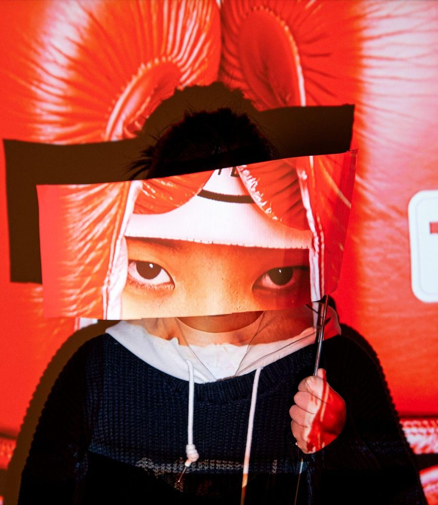

Tomorrow, built from my own footprints.
Profile
Seoul · Since 2026
Psychology taught me to read people. The stage taught me to time them.
I am a stage manager and theatre producer based in Seoul. My work sits between two disciplines — the study of how people behave under pressure, and the craft of holding a production together while they do. Cue sheets, run schedules and rehearsal reports are, to me, instruments of care.
- Education
- UC Berkeley — B.A. Psychology, Minor in Theatre Production
- Focus
- Stage Management · Theatre & Musical Producing
- Practice
- Cue sheets · Run schedules · Blocking notation · Production research
- Archive
- Pottery · Photography · Boxing
“Everyone deserves a chance to fly.” Elphaba’s words from Wicked have stayed with me for as long as I can remember. Having watched it with my family since childhood, she was never only a character — she was a friend I could return to whenever I needed comfort.
As I grew older, my attention drifted past the performers and into everything happening behind the curtain: the lighting, the sound, the scenic transitions, the coordination that lets a performance appear seamless.
Looking back, that way of paying attention didn’t begin with theatre. Clay taught me patience with imperfection — a shape only arrives after many small adjustments. Boxing, over ten years, taught me to stay composed under pressure and to trust timing over force. Photography trained my eye to notice what belongs inside a frame, and what should be left out.
Each of these was quietly preparing me to see a production the way a stage manager does: as something built piece by piece, held together by attention and care.
Portfolio
Theatre · Musical · PerformanceNew productions are added below as they happen.
Archive
Three rooms off the stageEverything outside the theatre that trained the same eye.
Gallery
Contact
Admit twoFor production enquiries, availability and full CV.